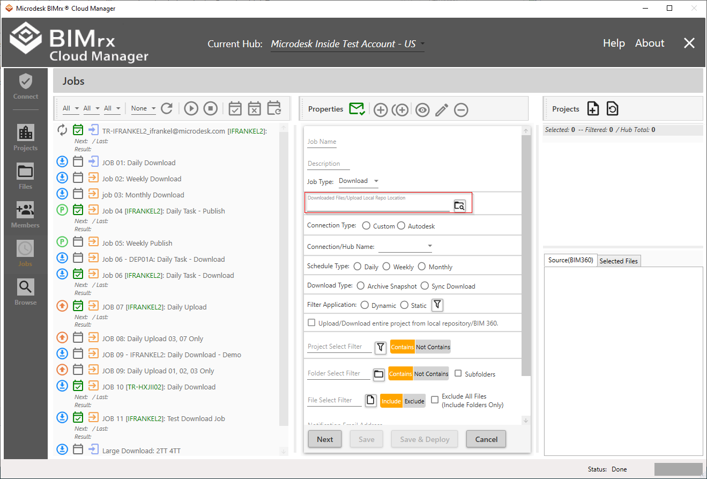
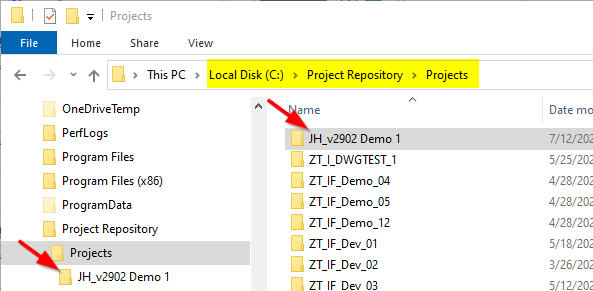
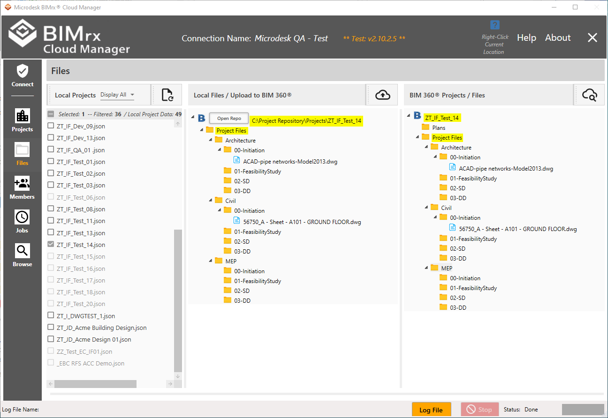

Download Files/Upload Repo Location
Download Location indicates where files are downloaded to via the Download Job Type.

This must be a directory location accessible with write access from the local machine. If the location does not have the necessary write access the Job will fail. This location can be typed in if known or navigated to and selected by pressing the Browse Folders button. The previously selected location will be remembered when pressing the  button. Download Location entry is required when Job Type is set to Download.
button. Download Location entry is required when Job Type is set to Download.
Uploads
For uploads, the directory must be the parent of a sub folder containing the name of the selected project.
For example, let's say we have a project repository of C:\Project Repository\Projects that contains subfolders for all projects that might be uploaded:

Therefore, we have folders immediately below the subfolder Projects of it's parent C:\Project Repository--each one containing the name of a project. Therefore. for example, a project of JH_v2902 Demo 1 contains a full path of C:\Project Repository\Projects\JH_v2902 Demo 1. The location for this project is in addition to any other project that is included in the Repo and and are included as subfolders immediately below C:\Project Repository\Projects. In the case of the sample Repo shown above, we see ZT_I_DWGTEST_1, ZT_IF_Demo_04, ZT_IF_Demo_05, etc.
Each Project-named Repository location must contain a structure that corresponds with that found in BIM 360®, as shown below:

The Local Files, shown in the middle column, above, represents the local folder structure along with all files located there. The BIM 360® Projects, shown in the right column, display the folder structure and all files as contained in BIM 360®. Please note the repository location, referred to above, ending with a subfolder having the project name. Also note the complete folder structure corresponds to that found on BIM 360®, starting with the top level folders of Projects (included in the above example). If there were any Plans folder files to be uploaded, the Plans folder would be added right below the individual project folder (here ZT_IF_Test_14), the same level as Project Files. If there are no Plans files to be uploaded, it need not be included, as shown above.
Please Note—The above example is intended to demonstrate the relationship between the local Repo and the one on BIM 360®. Of course, additional folders and files that don't exist on BIM 360® are typically added to the local Repo, allowing BIMrx® Cloud Manager to create and upload them on demand.
For more information on how the files are organized in the Download Location, refer to the previous section, Download Type, and to Browse Projects, under Archive Snapshot vs Sync Download. For more information on uploading Files in general, refer to Add Files to Projects, in general, and Locate Project Files, in particular.